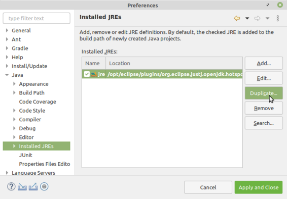
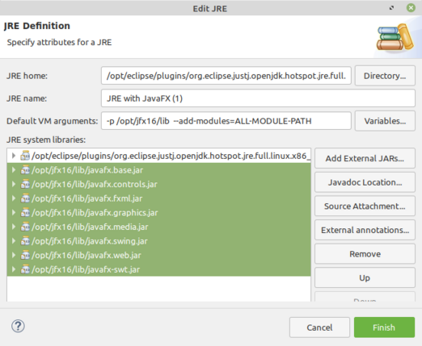
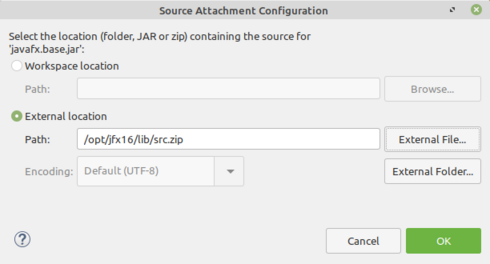
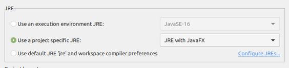

CS 124, Fall 2021
Lab 8: Using Objects
The goal of this lab is for you to create and use objects, including an array of objects. You will work on two programs: ArithmeticQuiz.java, which is an improved version of the addition quizzes you worked on previously, and BrownianMotion.java, which will also be your first experience with animation in JavaFX.
To use JavaFX in Eclipse, you will need to do some configuration. The process is outlined in the first part of this lab. Don't create the Eclipse project for this lab until you have done the configuration!
As usual, this lab is due by the start of the lab period next week, October 26. Setting up Eclipse to use JavaFX is part of this lab, so please turn in a copy of your complete lab8 project directory.
About the "Final Project"
This is not part of the lab. You can read it later. But you should definitely read it and start thinking about possible projects.
This course does not have a large final project, in the sense of a big project that would count for a large part of the grade for the course. However, for labs 12 and 13, you will work on a kind-of final project that should be more ambitious than what would be done in a single lab and that can showcase what you have learned in the course.
Ideally, you should come up with your own idea for a project and discuss it with me. People tend to have ideas that will be too hard, or sometime too easy, so it is important to get approval for an idea before you start work on it. You can start thinking about ideas now, and bring them to office hours for disussion.
The project can be an individual project, or it can be for a group of two or three students. Group projects should be more ambitious. For a group project, all members of the group will receive the same grade.
By he time you start the project, you will know more about writing GUI applications. Lab 10, in two weeks, will be a GUI tutorial. You will be able to use mouse and keyboard input and "controls" such as menus and text input boxes. I hope you will consider doing a GUI program, but that is not required.
Last year, I used a GUI version of Hangman as the default final project. If you have no better idea, you can do that. It can be fun! See Lab 10 from Spring '21. But it would be nice if you can find something that really inspires you. Maybe you liked the Loopy Art lab, and you'd like to do more examples of abstract art (which could be animated or have some user interaction). Maybe you liked Turtle Graphics, so how about a program where the user can type in commands for the turtle? Maybe you will be intrigued with the idea of using Midi to make music in next weei's lab and would like to do something with music. I once had two students double-majoring in computer science and music who did a program that quizzed students on musical progressions. And I have an old Midi lab where students worked on a GUI Midi keyboard that I provided. You might do that lab with some enhancements, such as letting the user save tunes that they play. (The GUI keyboard didn't use JavaFX, but I could provide an updated version that does.) Maybe you are enjoying some other course and can think of a program that would be useful in that course. Of course, there are game programs such as Minesweeper. You can try to think of something original. One of the more interesting original ideas that a student came up with was to implement ASCII Art images.
JavaFX Setup in Eclipse
Because JavaFX is not a standard part of Java, you have to set up Eclipse to support it. And because JavaFX is defined in a set of "modules," that setup is trickier than it should be. This section guides you through the steps of the setup in the lab. This is a one-time setup. You will not need to repeat it unless you start a new Java workspace. (If you want to do the same thing on your own computer, you will probably need more information. See Subsection 2.6.5 in the textbook.)
First, open the "Preferences" dialog, using the command at the bottom of the "Window" menu. Open the "Java" section on the left, and click "Installed JREs." A "JRE" is for compiling and running programs in Eclipse. Click the one entry in the list of Installed JREs to select it. Then click the "Duplicate" button:

A new dialog box named "Edit JRE" will open, where you can configure the JRE. You should enter a new "JRE name" for the JRE; any name will do, but you need to remember the name. Click the "Add External JARs" button. This will allow you to add the JavaFX jar files to the JRE, which will make JavaFX available for compiling your program. A file browser window will open. Navigate to the directory /opt/jfx16/lib. (To get to /opt, click the small triangle to the left of the directory name at the top of the window, then click the small disk icon at the start of the list of directories. It will look something like this: . The /opt directory will be in the list of files in the browser.) Select all eight .jar files in that lib directory, and click "Open". The jar files will be added under "JRE System Libraries" in the "Edit JRE dialog" as shown here:

The next step will make it possible for Eclipse to show you documentation about the classes and methods in JavaFX. Select the eight JavaFX jar files in the "JRE System libraries". Click the "Source Attachment" button. In the dialog that appears, click "External location", then click the "External File" button. A file browser will pop up, still showing the /opt/jfx16/lib directory. Select src.zip, and click "Open". The "Path" will be filled in as shown here, and you just need to click "OK":

Finally, you need to make JavaFX available when the program is run. To do that, you need to fill in the "Default VM arguments" input box with the following text, as shown in the picture of the "Edit JRE" dialog box shown above:
-p /opt/jfx16/lib --add-modules=ALL-MODULE-PATH
With all that set up, click the "Finish" button in the "Edit JRE" dialog box, then click the "Apply and Close" button in the "Preferences" dialog box. You are now ready to create Eclipse projects that use JavaFX.
Back in the Eclipse main window, create a new project named lab8. In the "New Java Project" dialog, in the "JRE" section, select "Use a project specific JRE", and select the JRE with JavaFX that you just created from the popup menu:

As usual, make sure that "Create module-info.java file" is not checked in the "Module" section.
To test that your JavaFX setup is correct, add the four files from /classes/cs124_Eck/lab8-files to your new lab8 project: BrownianMotion.java, ShapeInfo.java, ArithmeticQuiz.java, and ArithmeticProblem.java. If JavaFX is set up correctly for compiling programs, there will be no errors in any of the files. Try running BrownianMotion.java. This will work, as long as JavaFX is set up correctly for running JavaFX programs. And try hovering your mouse over one of the JavaFX classes, such as Application or GraphicsContext, in an editor. If the Source Attachment was set up correctly, you will see documentation for the class. If any of these things don't work, you will need to edit the JRE configuration. The first thing to check is whether you selected the correct JRE when you created the project. Ask for help if you need it!
Note that ArithmeticProblem.java and ArithemeticQuiz.java do not use JavaFX. It's OK to use a project with JavaFX for programs that don't need JavaFX.
Arithmetic Quiz
In your first exercise, you will use the ArithmeticProblem class. You should edit the ArithemeticQuiz program so that it administers a ten question quiz to the user. Each question must be represented by an object of type ArithemeticProblem. Note that calling a constructor from that class ("new ArithemeticProblem()") creates a random arithmetic problem, and that there are methods in the object for getting the question and for getting the correct answer. Read the source code for ArithmeticProblem.
Also, to give you another type of object to work with, you are required to read the user's answers using a Scanner, not TextIO. The Scanner class is covered in Subsection 2.4.6. Note that you need to import java.util.Scanner, and you need to create a scanner for reading user input with a statement such as
Scanner stdin = new Scanner( System.in );
You can then use stdin.nextInt() to read an integer from the user. (If the user inputs something that is not an integer, the program will crash. It is not very easy to catch and recover from the error, and for this exercise, you do not need to deal with the possible error. But see the last section on this web page.)
Do not make any modifications to ArithmeticProblem.java. Do all your work in ArithmeticQuiz.java.
Brownian Motion
In the process known as "Brownian motion", a particle moves by small random amounts in each small time period. For the second exercise, you will write an animation that imitates Brownian motion. The program BrownianMotion.java already imitates Brownian motion for one "particle," represented by a small red square. Your assignment is to replace the red square with an array of objects of type ShapeInfo, and make each object in the array undergo Brownian motion.
The ShapeInfo class is very simple. It merely organizes four properties: the x and y coordinates of the center point of the shape, the size of the shape, and the color of the shape. Since these are public properties, they can be accessed directly. That is, if s is a variable of type ShapeInfo (whose value is not null), then s.x, s.y, s.size, and s.color are variables that represent the properties of the shape. You will be using an array of such objects. See Subsection 5.1.4 for information about using arrays of objects.
Do not make any modifications to ShapeInfo.java. All of the work is done in BrownianMotion.java. You will need to replace the global variables x and y with an array, and you will need to work on the methods drawFrame() and initialize().
Remember that drawFrame() completely redraws the picture every time it is called. As it does so, it modifies the data so that the picture will be different the next time it is called.
You have some freedom in the animation that you create. The shapes can be circles or squares, and they can be filled, stroked, or both. You can use either a one-dimensional or a two-dimensional array. You can make any animation that uses Brownian motion. Three ideas are shown in this illustration:
On the left, all the squares were initially at the center of the window. As time goes on, they will spread out, imitating the process known as "diffusion." In the center, the window started out completely filled with translucent squares. As time goes on, the squares jitter about their original positions. Eventually, they would all drift away. On the right, the disks are jitterring about their original positions, but each one is trapped in its own small square. To implement this, in each frame a new position is computed for the disk, but if that position would move it beyond the boundaries of its square, then the disk is not moved in that frame.
Catching Scanner Errors
This section is not part of the lab. You can read it if you want to catch and handle errors in user input with Scanner. It is easy to avoid an error when reading an int with nextInt(): The Scanner class has the boolean-valued method hasNextInt() that tells you whether the next item in the input is, in fact, a legal int value, so you can test that before trying to read it. The problem is that it is difficult to recover from the problem in a consistent way that will always work nicely.
When the goal is to read one int value from the user per line of input, with a scanner, one approach is to read the input using the scanner's nextLine() method, which reads one full line of input. The string returned by that function can then be converted to an int using Integer.parseInt(). You can catch the possible NumberFormatException from that method, and recover from it by asking the user for another input. The code looks something like this, where stdin is the Scanner:
int input;
while (true) {
try {
String inputString = stdin.nextLine().trim();
input = Integer.parseInt(inputString);
break; // Got a legal input, so end the loop.
}
catch (NumberFormatException e) {
// Input is invalid; print a message and go back for another input.
System.out.print(" Please enter an integer: ");
}
}
The ".trim()" removes any leading and trailing spaces from the user's input. This is done because Integer.parseInt() will fail for a string with spaces before or after the numerical value.